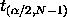
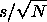
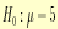

|
1.
Exploratory Data Analysis
1.3. EDA Techniques 1.3.5. Quantitative Techniques
|
|||
| Sample Output for Confidence Interval |
The following confidence intervals were generated
using R for the
ZARR13.DAT
data set.
"Two-Sided Confidence Interval for the Mean"
Statistics
Number of Observations 195.00000
Mean 9.26146
Std. Dev. 0.02279
Std. Dev. of Mean 0.00163
Conf.Level Tvalue Halfwidth Lower Upper
1 50.000 0.67576 0.00110 9.26036 9.26256
2 75.000 1.15380 0.00188 9.25958 9.26334
3 90.000 1.65275 0.00270 9.25876 9.26416
4 95.000 1.97227 0.00322 9.25824 9.26468
5 99.000 2.60141 0.00425 9.25722 9.26571
6 99.900 3.34138 0.00545 9.25601 9.26691
7 99.990 3.97301 0.00648 9.25498 9.26794
8 99.999 4.53669 0.00740 9.25406 9.26886
|
||
| Interpretation of the Sample Output |
The first few lines display the sample statistics used in
calculating the confidence interval. The table shows the confidence
interval for several different significance levels. The first column
lists the confidence level (which is 1 -
expressed as a percent),
the second column lists the t-value (i.e.,
 ), the third column lists the t-value times the standard error (the standard error is ), the fourth column lists the lower confidence limit, and the fifth column lists the upper confidence limit. For example, for a 95 % confidence interval, we go to the row identified by 95.000 in the first column and extract an interval of (9.25824, 9.26468) from the last two columns.
|
||
| Sample Output for t Test |
R software was used to generate the following output for
a one-sample, two-sided t-test for the
ZARR13.DAT
data set.
One Sample t-test
data: y
t = 2611.286, df = 194, p-value < 2.2e-16
alternative hypothesis: true mean is not equal to 5
95 percent confidence interval:
9.258242 9.264679
sample estimates:
mean of x
9.26146
|
||
| Interpretation of Sample Output |
We are testing the null hypothesis that the population mean is 5, or
 , using R software.
|
||